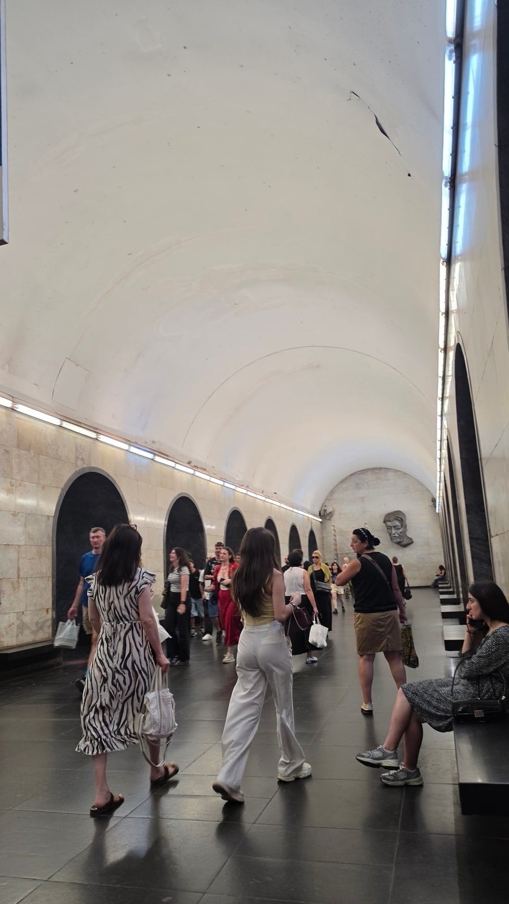
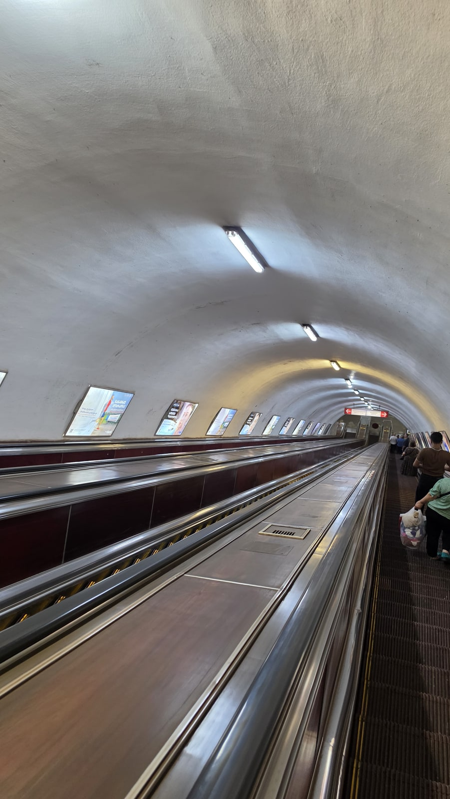
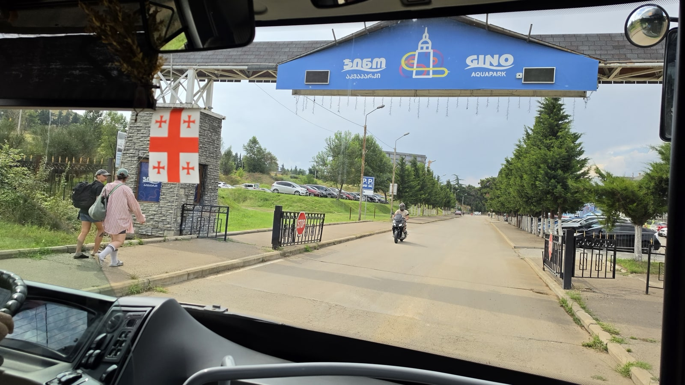

<meta charset="utf-8">
<title>트빌리시 대중교통 — 메트로머니와 1일권 3라리 — 나의 투자 그리고 행복한 여행</title>
<meta name="description" content="트빌리시 교통카드 메트로머니 사용법: 1회 1라리(90분 환승), 1일권 3라리, 정기권, 결제 수단, 케이블카·푸니쿨라 요금.">
<meta name="viewport" content="width=device-width, initial-scale=1">
<link rel="canonical" href="https://worldtraveler1.tistory.com/56">
<link rel="preconnect" href="https://fonts.googleapis.com">
<link rel="preconnect" href="https://fonts.gstatic.com" crossorigin>
<link rel="stylesheet" href="https://fonts.googleapis.com/css2?family=Hahmlet:wght@400;600;800&family=IBM+Plex+Mono:wght@400;500&family=IBM+Plex+Sans+KR:wght@300;400;500;600&display=swap">

<style>
  :root{
    --paper:#F2EEE6;--surface:#FAF8F3;--surface-2:#E7E1D5;
    --ink:#191510;--ink-2:#4A4235;--ink-3:#7D7364;
    --line:#D6CEBF;--line-soft:#E4DDD0;--accent:#B06A15;--accent-bright:#C2761A;
    --up:#E5484D;--down:#3B82F6;
    --f-display:"Hahmlet",'Nanum Myeongjo',"Apple SD Gothic Neo",serif;
    --f-body:"IBM Plex Sans KR","Apple SD Gothic Neo","Malgun Gothic",sans-serif;
    --f-mono:"IBM Plex Mono","SFMono-Regular",Consolas,monospace;
    --pad:clamp(20px,5vw,64px);
  }
  @media (prefers-color-scheme:dark){
    :root:not([data-theme="light"]){
      --paper:#0B1120;--surface:#121A2C;--surface-2:#1A2439;
      --ink:#E9EEF7;--ink-2:#A9B5C9;--ink-3:#72809A;
      --line:#26314A;--line-soft:#1D2739;--accent:#E8A33D;--accent-bright:#F0B45C;
    }
  }
  *{box-sizing:border-box;}
  body{margin:0;background:var(--paper);color:var(--ink);font-family:var(--f-body);
    font-weight:300;font-size:1rem;line-height:1.75;-webkit-font-smoothing:antialiased;}
  a{color:inherit;}
  img{max-width:100%;height:auto;}
  .wrap{max-width:760px;margin:0 auto;padding-inline:var(--pad);}
  .nav{position:sticky;top:0;z-index:20;background:color-mix(in srgb,var(--paper) 88%,transparent);
    backdrop-filter:saturate(180%) blur(12px);border-bottom:1px solid var(--line);}
  .nav-in{display:flex;align-items:center;justify-content:space-between;height:58px;}
  .brand{font-family:var(--f-display);font-weight:600;font-size:1rem;letter-spacing:-.02em;text-decoration:none;}
  .back{font-family:var(--f-mono);font-size:.72rem;color:var(--ink-3);text-decoration:none;}
  .article{padding-block:clamp(40px,7vw,72px) clamp(56px,9vw,96px);}
  .eyebrow{font-family:var(--f-mono);font-size:.68rem;letter-spacing:.16em;text-transform:uppercase;
    color:var(--accent);margin:0 0 14px;}
  h1{font-family:var(--f-display);font-weight:800;font-size:clamp(1.6rem,4.4vw,2.3rem);
    line-height:1.3;letter-spacing:-.03em;margin:0 0 16px;}
  .byline{font-family:var(--f-mono);font-size:.72rem;color:var(--ink-3);
    padding-bottom:24px;border-bottom:1px solid var(--line);margin-bottom:32px;}
  h2{font-family:var(--f-display);font-weight:600;font-size:1.25rem;letter-spacing:-.02em;margin:42px 0 14px;}
  h3{font-family:var(--f-display);font-weight:600;font-size:1.05rem;letter-spacing:-.02em;
    margin:30px 0 10px;padding-top:14px;border-top:1px solid var(--line-soft);}
  h3 .code{font-family:var(--f-mono);font-size:.7rem;font-weight:400;color:var(--ink-3);margin-left:6px;}
  p{margin:0 0 18px;color:var(--ink-2);}
  ul.checks{margin:0 0 18px;padding-left:20px;color:var(--ink-2);}
  ul.checks li{margin-bottom:8px;font-size:.94rem;}
  table{width:100%;border-collapse:collapse;font-size:.88rem;margin-bottom:8px;}
  th{font-family:var(--f-mono);font-size:.66rem;letter-spacing:.06em;text-transform:uppercase;
    color:var(--ink-3);text-align:right;padding:8px 6px;border-bottom:1px solid var(--line);}
  th:first-child{text-align:left;}
  td{padding:10px 6px;border-bottom:1px solid var(--line-soft);color:var(--ink-2);}
  td.num{font-family:var(--f-mono);text-align:right;font-variant-numeric:tabular-nums;}
  td.up{color:var(--up);} td.down{color:var(--down);}
  .scroll{overflow-x:auto;}
  figure{margin:22px 0;}
  figure img{display:block;border-radius:3px;background:var(--surface-2);}
  figcaption{margin-top:8px;font-family:var(--f-mono);font-size:.68rem;color:var(--ink-3);text-align:center;}
  .note{margin-top:34px;padding:16px 18px;border-left:3px solid var(--accent);
    background:var(--surface);border-radius:0 3px 3px 0;}
  .note p{margin:0;font-size:.85rem;color:var(--ink-3);}
  .foot{border-top:1px solid var(--line);background:var(--surface);padding-block:30px 38px;}
  .foot p{margin:0;font-size:.8rem;color:var(--ink-3);}
</style>

<nav class="nav">
  <div class="wrap nav-in">
    <a class="brand" href="../index.html">나의 투자 그리고 행복한 여행</a>
    <a class="back" href="../index.html#stocks">← 시황으로</a>
  </div>
</nav>

<main class="wrap article">
  <p class="eyebrow">Market</p>
  <h1>트빌리시 대중교통 정리 — 요금·정기권·결제수단 (2026.9 확인)</h1>
  <p class="byline">여행 · 2026-09-14 기준</p>

  <p>한 줄 요약: 지하철·버스 1회 1라리(90분 환승 무료), 1일권 3라리, 교통카드(메트로머니) 2라리. 케이블카 2.5라리는 별도, 므타츠민다 푸니쿨라는 전용 카드가 필요합니다.</p>
  <p>요금·결제 정보는 트빌리시 공항 공식 안내와 위키백과, 2026년 노선 우회는 트빌리시 시청 발표 보도를 참고했습니다.</p>
  <figure><figcaption>저녁 무렵의 트빌리시 지하철역 (2026.8.19 18:24 촬영)</figcaption></figure>
  <h2>한눈에 보는 요금 (2026년 9월 기준)</h2>
  <ul class="checks">
    <li>지하철·버스 1회 — 1라리 (약 540원), 90분 안 환승 무료</li>
    <li>1일권 — 3라리 / 1주권 — 20라리 / 1달권 — 40라리 / 3달권 — 100라리</li>
    <li>교통카드(메트로머니) — 카드값 2라리</li>
    <li>결제 — 메트로머니, 컨택리스 은행카드, 앱, 현금 (앱·현금은 90분 무료 환승 안 됨)</li>
    <li>리케 공원 케이블카 — 2.5라리 (교통카드로 결제, 1일권 미포함)</li>
    <li>므타츠민다 푸니쿨라 — 편도 10라리 + 전용 카드 2라리 (일반 교통카드 불가)</li>
  </ul>
  <p>정기권 요금과 결제 수단은 트빌리시 공항 공식 대중교통 안내에 나온 내용입니다.</p>
  <h2>제가 쓴 방법 — 카드 2라리 + 1일권 3라리</h2>
  <p>교통카드를 2라리에 사고 1일권(3라리)을 충전해서 다녔습니다. 1일권이 있으면 탈 때마다 요금을 신경 쓸 필요가 없습니다.</p>
  <p>숙소는 중앙역(스테이션 스퀘어) 근처였습니다. 여기서 지하철로 구시가지까지 10~15분이었습니다. 스테이션 스퀘어가 두 노선의 환승역이라 어디로 가든 편했습니다.</p>
  <figure><figcaption>트빌리시 지하철의 긴 에스컬레이터 (2026.8.13 12:49 촬영)</figcaption></figure>
  <h2>1일권, 언제 이득일까</h2>
  <p>1회 요금이 1라리이고 90분 안 환승이 무료라서, 1일권(3라리)은 <b>하루에 90분 간격을 넘겨 네 번 이상 탈 때</b> 이득입니다.</p>
  <ul class="checks">
    <li>숙소 → 관광지 → 다른 관광지 → 숙소처럼 하루 3~4번 따로 탄다 — 1일권이 편합니다</li>
    <li>하루 한두 번만 탄다 — 그냥 1회 요금이 쌉니다</li>
    <li>여러 날 머물며 매일 탄다 — 1주권(20라리)도 계산해볼 만합니다</li>
  </ul>
  <div class="note"><p>금액 차이는 몇백 원 수준입니다. 그보다 1일권의 진짜 장점은 탈 때마다 환승 시간을 계산하지 않아도 된다는 것입니다.</p></div>
  <h2>지하철 — 노선 2개, 역 23개</h2>
  <figure><figcaption>트빌리시 지하철 승강장 (2026.8.19 18:24 촬영)</figcaption></figure>
  <p>트빌리시 지하철은 1966년에 개통했습니다. 노선은 두 개, 역은 23개, 총 길이 28.6km로 작은 편이라 금방 익숙해집니다.</p>
  <ul class="checks">
    <li>1호선(아흐메텔리–바르케틸리) — 구시가지 쪽 리버티 스퀘어, 아블라바리, 중앙역을 지납니다</li>
    <li>2호선(사부르탈로선) — 스테이션 스퀘어에서 갈라져 북서쪽으로 갑니다</li>
    <li>환승역 — 스테이션 스퀘어(중앙역)</li>
    <li>운행 — 오전 6시 조금 전부터 자정 무렵까지</li>
  </ul>
  <p>역이 깊어서 에스컬레이터가 깁니다. 짐이 많거나 무릎이 불편하다면 손잡이를 꼭 잡으세요.</p>
  <h2>버스 — 지하철이 안 가는 곳</h2>
  <figure><figcaption>조지아 연대기로 가는 대중교통 안에서 (2026.8.13 15:24 촬영)</figcaption></figure>
  <p>지하철이 닿지 않는 곳은 버스로 갑니다. 저는 시내 북쪽 외곽의 조지아 연대기에 갈 때 대중교통을 탔습니다(탄 노선 번호는 기록해두지 못했습니다).</p>
  <p>노선은 지도 앱에서 대중교통 경로를 검색하면 번호가 나옵니다. 요금은 지하철과 같은 1라리이고, 90분 안에 지하철로 갈아타면 추가 요금이 없습니다.</p>
  <div class="note"><p>2026년 주의 — 트빌리시 시청이 2026년 7월, 루스타벨리 대로를 약 4개월간 공사로 통제한다고 발표했습니다. 공항 337번을 포함한 여러 버스가 우회합니다. 이 기간에 간다면 정류장 위치를 한 번 더 확인하세요.</p></div>
  <h2>케이블카와 푸니쿨라 — 요금 체계가 따로입니다</h2>
  <figure><figcaption>리케 공원에서 나리칼라로 올라가는 케이블카 (2026.8.13 19:11 촬영)</figcaption></figure>
  <p><b>리케 공원 케이블카</b> — 강 건너 리케 공원에서 나리칼라 요새 쪽으로 올라갑니다. 2.5라리이고 메트로머니 카드로 결제하는데, 1일권에는 포함되지 않는 것으로 안내됩니다.</p>
  <p><b>므타츠민다 푸니쿨라</b> — 시내 서쪽 므타츠민다 공원으로 올라가는 등산 열차입니다. 편도 10라리에 전용 카드(2라리)가 따로 필요하고, 일반 교통카드는 쓸 수 없는 것으로 안내됩니다.</p>
  <div style="text-align:center;margin:30px 0"><a href="https://danielmoon82.github.io/moon/posts/tbilisi-oneday-course-2026-09-14.html" target="_blank" rel="nofollow sponsored noopener" style="display:inline-block;padding:15px 28px;background:#E34948;color:#fff;font-weight:700;font-size:18px;text-decoration:none;border-radius:8px"><b>▶ 트빌리시 하루 코스(케이블카·노을 동선) 보기</b></a></div>
  <h2>공항 버스 337번도 같은 카드</h2>
  <p>공항과 시내를 잇는 337번 버스도 같은 요금 체계입니다. 1라리, 교통카드나 컨택리스 은행카드로 탈 수 있습니다. 저는 출국하는 날 이 버스로 40~50분 걸려 공항에 갔습니다.</p>
  <div style="text-align:center;margin:30px 0"><a href="https://danielmoon82.github.io/moon/posts/georgia-airport-to-tbilisi-2026-09-14.html" target="_blank" rel="nofollow sponsored noopener" style="display:inline-block;padding:15px 28px;background:#E34948;color:#fff;font-weight:700;font-size:18px;text-decoration:none;border-radius:8px"><b>▶ 트빌리시 공항 이동 정리 보기</b></a></div>
  <h2>택시는 앱으로</h2>
  <p>밤늦게 움직이거나 짐이 많을 때는 앱 호출 차량이 편합니다. 탑승 전에 요금이 나오니 흥정할 필요가 없습니다. 저는 밤 도착한 날 공항에서 시내까지 앱으로 차를 불렀고, 약 17,000원이 나왔습니다.</p>
  <h2>자주 묻는 질문</h2>
  <p><b>트빌리시 교통카드는 어디서 사나요?</b></p>
  <p>메트로머니 카드는 보통 지하철역 창구에서 판매합니다. 카드값은 2라리이고, 1회 요금이나 1일권을 충전해서 씁니다.</p>
  <p><b>교통카드 없이 은행카드로 탈 수 있나요?</b></p>
  <p>컨택리스 은행카드로도 탈 수 있고 90분 환승도 됩니다. 다만 1일권 같은 정기권은 교통카드에 넣어야 합니다.</p>
  <p><b>1일권은 얼마인가요?</b></p>
  <p>3라리(약 1,600원)입니다. 교통카드 값 2라리가 따로 들고, 하루 동안 지하철과 버스를 제한 없이 탈 수 있습니다.</p>
  <p><b>지하철은 몇 시까지 다니나요?</b></p>
  <p>오전 6시 조금 전부터 자정 무렵까지 운행합니다.</p>
  <p><b>케이블카도 1일권으로 타나요?</b></p>
  <p>아닙니다. 케이블카는 2.5라리를 따로 냅니다(메트로머니 카드로 결제). 므타츠민다 푸니쿨라는 전용 카드가 필요합니다.</p>
  <h2>정리하면</h2>
  <p>트빌리시 대중교통은 카드 한 장(2라리)과 1회 1라리만 기억하면 됩니다. 하루에 여러 번 탈 계획이면 1일권 3라리를 넣으세요.</p>
  <p>케이블카와 푸니쿨라는 요금이 따로라는 것, 2026년에는 루스타벨리 대로 공사로 버스가 돌아간다는 것만 알고 가면 헷갈릴 일이 없습니다.</p>
  <div style="text-align:center;margin:30px 0"><a href="https://danielmoon82.github.io/moon/posts/georgia-travel-guide-2026-09-14.html" target="_blank" rel="nofollow sponsored noopener" style="display:inline-block;padding:15px 28px;background:#E34948;color:#fff;font-weight:700;font-size:18px;text-decoration:none;border-radius:8px"><b>▶ 조지아 여행 준비 총정리 보기</b></a></div>
  <p style="font-size:12px;color:#999;line-height:1.6;margin-top:36px">방문 날짜와 시각은 2026년 8월 12~20일 여행 중 찍은 사진의 촬영 시각(조지아 현지 시각)으로 확인했습니다. 요금·운영 정보는 2026년 9월 13~14일에 확인한 공개 정보이며 바뀔 수 있습니다. 원화 환산은 조지아 중앙은행 2026년 8월 14일 환율(1,000원 = 1.8403라리)로 계산한 대략치입니다. 요금·정기권·결제 수단은 트빌리시 공항 공식 사이트, 지하철 정보는 위키백과, 노선 우회는 인터프레스뉴스 2026년 7월 21일 보도를 참고했습니다. 케이블카·푸니쿨라 요금은 여행 가이드들의 공통 안내입니다.</p>
</main>

<footer class="foot">
  <div class="wrap"><p>나의 투자 그리고 행복한 여행 · 투자 판단의 참고 자료일 뿐, 매수·매도를 권유하지 않습니다.</p></div>
</footer>
